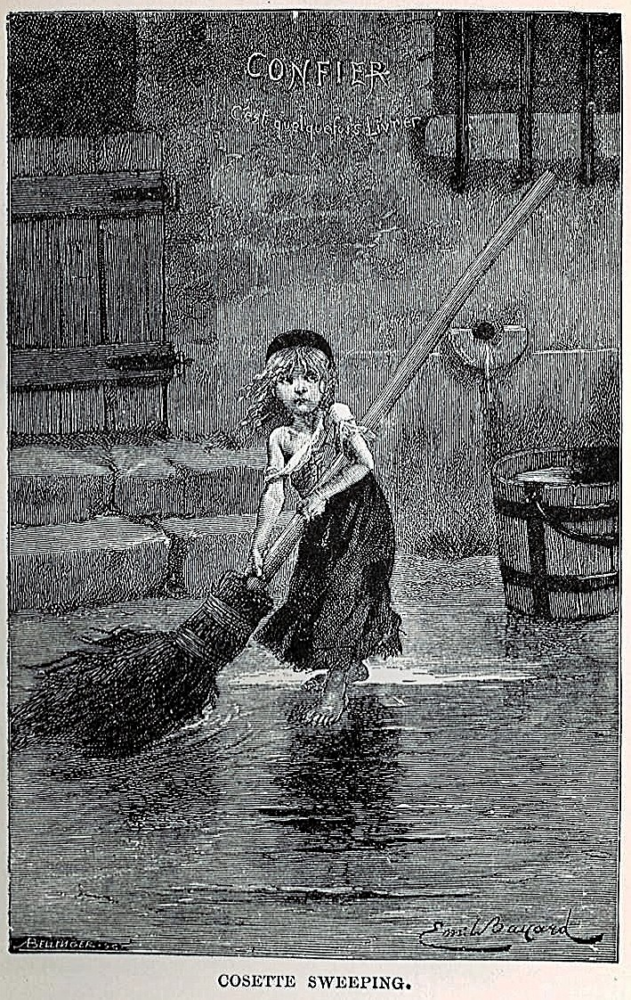

Sefiller
Yazarı : Victor Hugo
Türü : Roman, Trajedi, Epik,Tarihi Kurgu
Sayfa sayısı : 1462
Jan Valjean, yoksul bir köylüdür, ailesini doyurmak amacıyla çaldığı –yalnızca- bir somun ekmekten dolayı kürek cezasına çarptırılmış, defalarca kaçma teşebbüsünde bulunduğundan cezası katlanmış ve on dokuz senelik hapisten sonra inançlarını yitirmiş, topluma öfke ve kin duyarak tahliye olmuştur. Sefil bir halde geldiği “D” kasabasında, kasabanın piskoposundan gördüğü iyilikle aydınlanır ruhu.
Hayata ahlak ve fazilet sahibi iyiliksever bir insan olarak yeniden başlayan Valjean, Fransa’nın kuzeyinde ucuz mücevher imalatçılığı yaparak yaşamaktadır şimdi; geçmişini gizlemiş, zenginleşmiş ve herkesin sevgisini kazanıp kasabanın belediye başkanı olmuştur. Valjean’ın gizlediği geçmişten şüphelenen detektif Javert, araştırmaya koyulur ve “D” kasabasındaki hırsızlık olayına kadar ulaşır. Oysa, isim benzerliğinden, bir başkası Jan Valjean’ın yerine tutuklanmış, mesele kapanmıştır. Ne var ki Valjean’ın ahlakı, kendi yerine bir başkasının hapsedilmesine izin vermez. Teslim olur ve yeniden küreğe gönderilir.
Aradan bir kaç yıl geçtikten sonra bir kez daha kaçmayı başaran Valjean, teslim olmadan önce sakladığı –namusuyla kazanılmış- paralarını alır, Fantiana’nın kızı Cosette’i bulur ve bir manastırda bahçıvan olarak çalışmaya başlar. Evlat edindiği Cosette ise rahibe okuluna gitmektedir. Müfettiş Javert’ten kurtulmuş gibidir Jan Valjean. Bu sakin hayat, Cosette’in genç ve güzel bir genç kız olmasıyla değişir. Babası Napolyon ordusunda subaylık yapmış bir delikanlı; Marius’a (bilgi yelpazesi.net) aşık olmuştur Colette. Zengin dedesi tarafından büyütülen Marius, 1832’de isyan eden sosyalistlerin safındadır. Her zaman haklıdan yana olan Jan Valjean da öyle. Paris kanla yıkanırken, Javert ile Jan Valjean karşı karşıya gelirler. Valjean Javert’in hayatını bağışlar. Ancak bu yüce gönüllük karşısında bütün inandığı değerleri yıkılan Javert, intihar eder. İsyancıların durumu da pek parlak değildir. Marius ağır yaralanır ve Valjean tarafından kurtarılır. Cosette’in bu genci sevdiğini anlayan Valjean, onun eski bir kürek mahkumunun kızı olarak bilinmesini istemez ve ortadan kaybolur. Oysa Marius, hayatını kurtaran kişinin Valjean olduğunu öğrenmiştir. İki genç, son anlarını yaşayan Valjean’a koşarlar....
Müfettiş Javer onları takip etmektedir. Takip edildiğini anlayan Jan Valjan kaçarak, Kozet’i yatılı olarak bir kiliseye verir ve kendiside o kilisenin bahçıvan yardımcısı olur. Bay Jilnorman adlı birisi torunu Maryüs’ü büyütmektedir. Maryüs avukat olmak için çalışıyor ve dedesinin yanında kalıyordu. Ancak bir tartışma sonucunda Maryüs dedesinin evini terk ederek bir süre Sen-Jak otelinde kalır. Maryüs, borçlanmamak için otelden ayrılarak arkadaşı Kurfeyrak’ın odasına taşınır ve eğitimini tamamlayarak avukat olur. Bir gün Maryüs Lüksemburg parkında dolaşırken Kozet’i görür ve ona ilk bakışta aşık olur ve onu her gün görebilmek için bu parka gelir. Maryüs ile Kozet arasındaki ilişkiyi fark eden Jan Valjan bu ilişkiyi istememektedir ve oturdukları evden taşınırlar. Fakat Maryüs onları yine bulur ve Maryüs ile Kozet gizli gizli buluşurlar.
Bazı kişiler Krala karşı ayaklanırlar. Bunların içinde Maryüs de vardır. Daha sonra olaylar arasında Müfettiş Javer devrimcilerin tutsağı olur. Devrimcilerin arasına katılan Jan Valjan, Müfettiş Javer’i kurtarır. Jan Valjan, bir çatışma sırasında yaralanan Maryüs’ü kurtarır. Ancak Müfettiş Javer ikisini de yakalar. Müfettiş Javer kendisini devrimcilerin elinden kurtaran Jan Valjan ve Maryüs’ü serbest bırakır ancak görevini yerine getiremediği için intihar eder. Maryüs iyileşir ve Kozet ile evlenir. Zaman içerisinde iyice yaşlanan Jan Valjan da ölür.